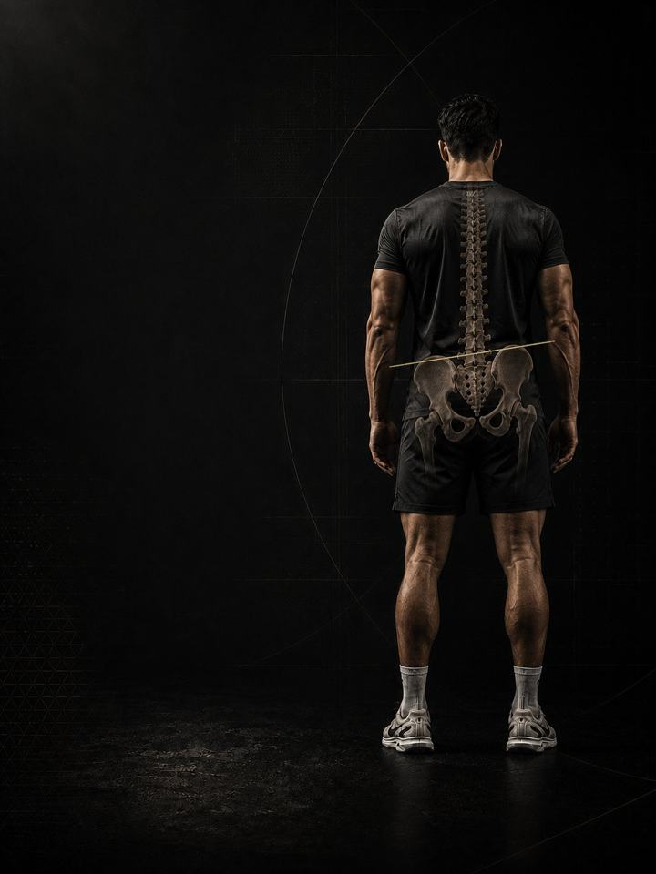

Lateral Pelvic Tilt
Level the pelvis by building the side that gives way and unloading the side that compensates.
- Built foranyone with one hip higher than the other, or one-sided low back ache
- Schedulea 10–15 minute daily routine, plus 3 strength days a week
- Equipmentdaily routine needs a mat and a band. Strength days need a full gym.
- Formatmobile PDF, every exercise linked to a demo video
- Add any 12-week program for 54.990 KD in total (64.980 KD if bought separately).
- Upgrade to 1:1 coaching within 30 days and this price comes off your first month.
The store opens soon. For now, Buy opens an Instagram message and you receive the PDF there.
Why a high hip starts to hurt
One hip sits higher than the other. You may have noticed it in a photo, in a mirror, or in the way one trouser leg always sits longer. Or you may only know it as one-sided back pain that never quite explains itself.
A lateral tilt is rarely a bone problem. In most people it is a control problem, side to side. The glute on one side stops holding the pelvis level, the muscle at the side of the low back takes over, and hours of standing on one leg, sitting on one hip and carrying on one shoulder set the pattern in place.
Almost everybody is slightly uneven, and a small difference on its own is not a diagnosis. Plenty of level-looking people hurt, and plenty of tilted people never do. What matters is whether the pelvis can be held level when you ask it to, and how much of your day loads one side. This program trains the side that gave up, releases the side that took over, and rebuilds the habits that keep resetting it.
Your week
A short daily routine, plus three strength days at the gym. Any three days work, as long as they are not back to back. One example:
| Sun | Mon | Tue | Wed | Thu | Fri | Sat |
|---|---|---|---|---|---|---|
| Day 1 + daily routine | Daily routine | Day 2 + daily routine | Daily routine | Day 3 + daily routine | Daily routine | Daily routine |
How it runs:
- Test first. Four tests before week 1, repeated after weeks 3 and 6. Note which side is high. Everything else follows from that.
- Daily routine, 10–15 min. Seven movements, every day. On strength days it doubles as the warm-up.
- Strength days. Days 1, 2 and 3, done in order, focused on side-to-side strength.
The five patterns behind most lateral pelvic tilt pain
These five patterns are what turn a harmless difference into one-sided pain. Most people recognise more than one. The program trains all five at once.
-
Weak side glute, one side. The muscle at the side of the hip has one main job in standing and walking: stop the opposite side of the pelvis dropping. When it tires on one side, the pelvis dips with every step and the low back has to catch it, thousands of times a day. In the program: Side-Lying Abduction, Hip Hitch, Lateral Walks
-
Overworking side of the low back (quadratus lumborum). The muscle running from the last rib to the pelvis hikes the hip when the glute won't hold it. It ends up short and working all the time on one side, which is exactly what a one-sided, band-like low back ache feels like. In the program: QL Stretch, Side Bend, Breathing Resets
-
Standing and sitting on one side. Shifting onto one leg, sitting on one foot, driving with a wallet under one hip, always carrying the bag on the same shoulder. None of it is dangerous for a minute. All of it adds up over eight hours. In the program: Stand on Two Legs, Carries
-
Short inner thigh and side body. On the high-hip side the inner thigh and side body sit permanently shortened. Range disappears quietly, and the pelvis loses the option of levelling even when the glute is willing. In the program: Adductor Stretch, Cossack Squat, 90/90 Flow
-
Uneven feet and arches. One arch that collapses further makes that leg act shorter, and the pelvis drops to meet it. This is the pattern people mistake for a true leg-length difference, and unlike a real one, it responds to training. In the program: Single-Leg Balance, Hip Airplanes
Your pattern adds. The PDF lists extra exercises for each pattern. Add the ones for the patterns that sound most like you at the end of each strength day, at 3 sets each. For pattern 3, the adds are Suitcase Carry and Farmers Carry, plus the Stand on Two Legs rules every day.
How the 6 weeks progress
The daily routine stays the same for all six weeks. The strength days move up a level every two weeks.
| Weeks 1–2 | Weeks 3–4 | Weeks 5–6 | |
|---|---|---|---|
| Phase | Control | Build | Integrate |
| Focus | Control and side-to-side awareness | Loaded side-hip work and single-leg work | Carries and lateral power |
| Working sets per week | 54 | 54 | 57 |
Average effort is about 6 out of 10 in weeks 3–4 and 6.7 in weeks 5–6. That scale is RPE, a 1–10 rating of how hard a set feels: 6 leaves about 4 reps in the tank, and 6.7 leaves about 3.
The rules that make it work
- The work climbs as the pelvis earns it. Control first, then load, then carries and single-leg work. Each phase lasts two weeks.
- The daily routine is the medicine. The strength days are the training. The routine does not change, so it can do its job every day.
- Keep training. The PDF has swaps for the lifts that let the strong side take over, so you don't have to stop everything while the weak side catches up.
- Decisions follow numbers. You retest after weeks 3 and 6.
How you'll measure progress
Four tests before week 1, then again after weeks 3 and 6, recorded on the score sheet in the PDF. They track the things that matter here, such as the side plank gap between sides and how well the pelvis holds level on one leg.
What good progress looks like
- Weeks 1–2: the one-sided ache eases as the side of the low back stops working overtime, and you start catching the standing habit.
- Weeks 3–4: the side plank gap narrows and the hip drop steadies.
- Weeks 5–6: the pelvis holds level under load, and carries feel even.
If nothing has moved by the week 3 retest, get a professional assessment instead of pushing harder.
Finishing standard at week 6: 2/10 pain or less on the loaded side for two straight weeks, a side plank gap under 20%, carries that feel the same in both hands, and single-leg stance with the pelvis level on both sides.
Stand on two legs
The tilt is not built in the gym. It is built in the eight hours of standing on the same leg, sitting on the same foot and carrying the bag on the same shoulder. Three rules: weight on both feet when you stand, legs uncrossed when you sit, and switch the shoulder you carry on every day. Protect the two free painkillers as well: 7–9 hours of sleep and managed stress.
The science
Every program in the library is built on published research, and how strong that research is gets stated, not implied. Where the evidence is limited, the page says so.
| Finding | Source | What it does not show |
|---|---|---|
| Strength training cuts sports injuries to under a third of the control rate. Stretching does not reduce them. | Lauersen, Bertelsen & Andersen, British Journal of Sports Medicine 2014. Meta-analysis of 25 randomised trials, 26,610 participants. PMID 24100287 | Risk ratio 0.32 for strength training and 0.96 for stretching. The trials varied a lot, and dose was not standardised. |
| Every sensible prescription beats not training. Heavier loads rank highest for strength. | Currier, McLeod, Banfield et al., British Journal of Sports Medicine 2023. Network meta-analysis, 178 strength and 119 hypertrophy studies. PMID 37414459 | The differences between prescriptions were small, and all of them worked. |
| Strength keeps improving as weekly sets rise, with diminishing returns. Training more often reliably helps strength. | Pelland, Remmert, Robinson, Hinson & Zourdos, Sports Medicine 2025. Meta-regressions, 67 studies, 2,058 participants (79% male). PMID 41343037 | How sets were counted (direct or indirect) changes the numbers considerably. |
What's next
After 6 weeks:
- The hip still complains: Hip & Groin Pain
- Build strength and muscle: Foundation Strength
- Train like an athlete: Athletic Development
- Another area needs work: the Corrective series
Want it built around you? One-to-one coaching through the Trainerize app: programming shaped by your goal, schedule and history, video review of your technique, and weekly adjustments. Seats are limited. DM @a_bouzubar with "COACHING".
Before you buy: get cleared first if
- You have chest pain, unusual breathlessness, palpitations or dizziness with exertion.
- You have uncontrolled high blood pressure, a known heart condition, or recent surgery.
- You are pregnant or recently post-partum. Get clearance and a tailored program first.
- Your pain started with a specific injury (a pop, the joint giving way, or swelling within hours), or you have numbness, weakness, fever or pain that wakes you at night.
This program is general fitness guidance. It does not replace a medical assessment.
- Add any 12-week program for 54.990 KD in total (64.980 KD if bought separately).
- Upgrade to 1:1 coaching within 30 days and this price comes off your first month.
The store opens soon. For now, Buy opens an Instagram message and you receive the PDF there.